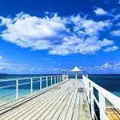
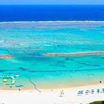

観光スポット
川平（かびら）湾
石垣港から車で約20分
石垣を代表する景勝地で、エメラルド色のサンゴ礁と黒真珠の養殖でよく知られています。 潮の流れが早いため、遊泳は禁止されています。
宮良川（みやらがわ）のヒルギ林
石垣港からバスで30分宮良橋で下車
巨大なマングローブ林（ヒルギ群落）があり、国の天然記念物に指定されているほど壮大です。
底地（すくじ）ビーチ
川平湾から車で約10分
マリンスポーツが楽しめ、マンタが見られることから、ダイバーに人気があります。
フサキビーチ
石垣港からバスで30分、宮良橋下車
島の西側にあるビーチで、西表（いりおもて）島に沈む美しいサンセットが見られるビーチとして有名です。
米原海岸
石垣空港より車で約30分
米原キャンプ場が隣接していて、ビーチパーティが楽しめます。潮の流れが早いため、遊泳は禁止されています。
マエザトビーチ
石垣空港より車で約5分
ホテル内にあるリゾートビーチですが、宿泊者以外でも利用可能です。ファミリー向けリゾート地で、 シュノーケルのレンタルもあります。